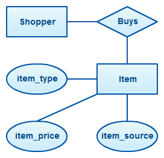

In Programming I have learned the basics of coding with Java.
What I enjoy about Programming:
Coding
Coding
Coding
A bit more coding
My future in Programming will involve me learning even more Java. Later in the year we'll go into a proper IDE so we can create
deeper detailed programs.
Information Systems

In Information Systems (IS) I have learned about databases, the planning of them and their uses in business.
What I enjoy about IS:
Insight into Computer Science in business
Gives me more understanding of why CS is so important
Probably the most useful in terms of post University skills
Get to organise stuff
My future in IS will involve me continuing the assignment of designing and developing a database for a fictional small business.